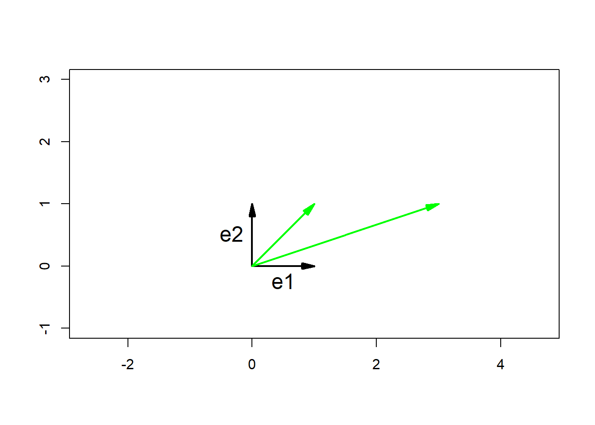
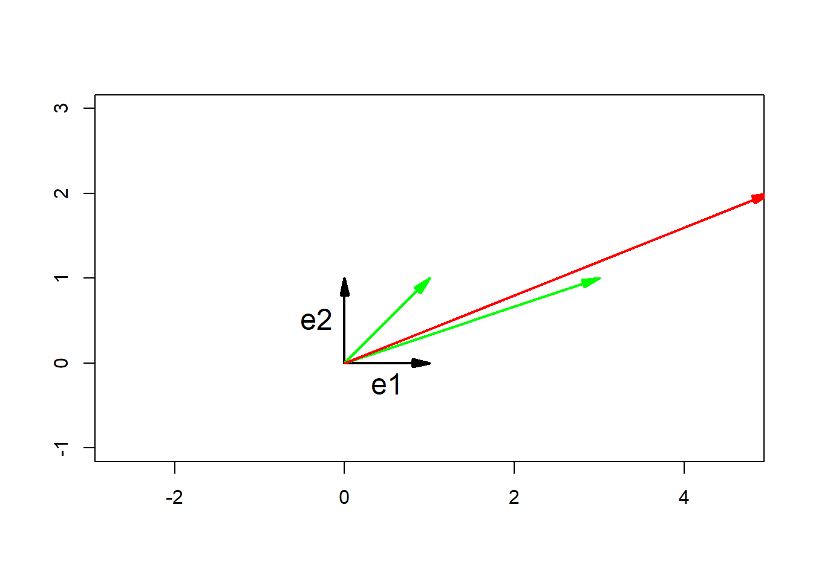
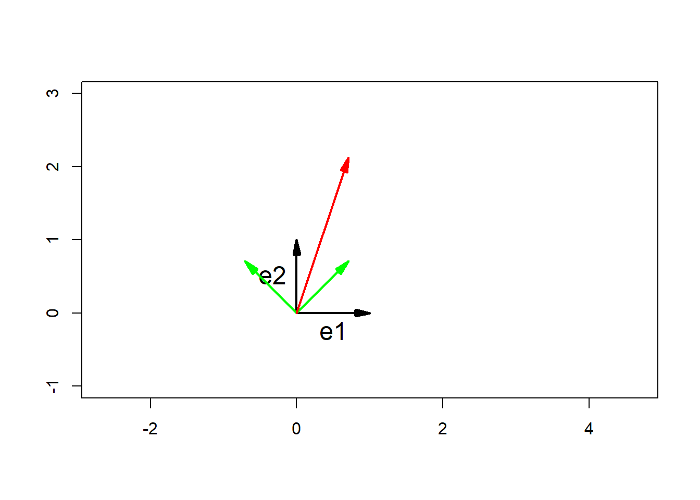

Chapter 3 Linear Mappings
3.1 Changing Basis
Recall that the columns of a transformation matrix, are the axes of the new basis vectors of the mapping in my coordinate system. We now discuss how to change from one basis system to another.
Consider two worlds, one for Alice and one for Bob. In Alice’s world, she has basis vectors given by our standard unit vectors \(e_1\) and \(e_2\) and Bob has basis vectors (in Alice’s world) as \(\begin{pmatrix} 1\\ 1 \end{pmatrix}\) and \(\begin{pmatrix} 3\\1 \end{pmatrix}\). Thus Bob’s transformation matrix is given by \(\begin{pmatrix} 3&1\\ 1&1 \end{pmatrix}\) in Alice’s world.
In Bob’s world, he views his basis vectors as our standard basis vectors \(e_1\) and \(e_2\).

Now, consider a vector \(\begin{pmatrix} 3/2 \\ 1/2 \end{pmatrix}\) in Bob’s world. We can map this into Alice’s world by calculating \[\begin{pmatrix} 3 & 1\\ 1&1 \end{pmatrix} \begin{pmatrix} 3/2 \\ 1/2 \end{pmatrix} = \begin{pmatrix} 5 \\ 2 \end{pmatrix}.\] Thus, Bob’s basis vectors, given in Alice’s world, multiplied by a vector given in terms of Bob’s world will yield the coordinates for the vector in Alice’s world.

So, we know how to transform vectors in Bob’s world to Alice’s world. We want to reverse the process and, given the information at hand, transform a vector from Alice’s world to Bob’s world. If \(B\) is the transformation matrix for Bob given in terms of Alice’s world, we can find \(B^{-1} = \begin{pmatrix} 1 & -1/2 \\ -1/2 & 3/2 \end{pmatrix}\). This represents the matrix of Alice’s basis vectors given in Bob’s world (Alice’s transformation matrix in Bob’s world). Now, if we take the vector \(\begin{pmatrix} 5 \\ 2 \end{pmatrix}\) in Alice’s world, we can map it into Bob’s world simply by computing \[ \begin{pmatrix} 1 & -1/2 \\ -1/2 & 3/2 \end{pmatrix}\begin{pmatrix} 5 \\ 2 \end{pmatrix} = \begin{pmatrix} 3/2 \\ 1/2 \end{pmatrix}.\]
3.2 Another Example
Consider another situation in which Alice has unit basis vectors \(e_1\) and \(e_2\) in her world and Bob has basis vectors \(\begin{pmatrix} 1/\sqrt{2} \\ 1/\sqrt{2} \end{pmatrix}\) and \(\begin{pmatrix} -1/\sqrt{2} \\ 1/\sqrt{2} \end{pmatrix}\), in Alice’s world. A quick dot product will show that Bob’s unit vectors are orthogonal to each other.

Bob’s transformation matrix is \(B = \begin{pmatrix} 1/\sqrt{2} & -1/\sqrt{2}\\ 1/\sqrt{2} & 1/\sqrt{2}\end{pmatrix}\) in Alice’s world. Now, consider a vector \(\begin{pmatrix} 2\\1\end{pmatrix}\) in Bob’s world. We can map that into Alice’s world \[\begin{pmatrix} 1/\sqrt{2} & -1/\sqrt{2}\\ 1/\sqrt{2} & 1/\sqrt{2}\end{pmatrix} \begin{pmatrix} 2\\1\end{pmatrix} = \begin{pmatrix} 1/\sqrt{2} \\ 3/\sqrt{2}\end{pmatrix}.\] To do the reverse transformation, we find the inverse of \(B\) given by \(B^{-1} = \begin{pmatrix} 1/\sqrt{2} & 1/\sqrt{2}\\ -1/\sqrt{2} & 1/\sqrt{2}\end{pmatrix}\). We map the vector \(\begin{pmatrix} 1/\sqrt{2}\\3/\sqrt{2}\end{pmatrix}\) from Alice’s world into Bob’s world as follows \[ \begin{pmatrix} 1/\sqrt{2} & 1/\sqrt{2}\\ -1/\sqrt{2} & 1/\sqrt{2}\end{pmatrix} \begin{pmatrix} 1/\sqrt{2}\\3/\sqrt{2}\end{pmatrix} = \begin{pmatrix} 2\\1\end{pmatrix}.\]
Interestingly, since Bob’s basis vectors are orthogonal in Alice’s world, we can do this same calculation with projections. We can take the vector \(\begin{pmatrix} 1/\sqrt{2}\\3/\sqrt{2}\end{pmatrix}\) in Alice’s world and compute the dot product of that vector with Bob’s unit vectors (in Alice’s world). Thus, we get \[\begin{pmatrix} 1/\sqrt{2}\\3/\sqrt{2}\end{pmatrix} \cdot \begin{pmatrix} 1/\sqrt{2}\\1/\sqrt{2}\end{pmatrix} = 2.\] This gives the first component of the vector in Bob’s world (since this was the first of Bob’s unit vectors). Moreover, \[\begin{pmatrix} 1/\sqrt{2}\\3/\sqrt{2}\end{pmatrix} \cdot \begin{pmatrix} -1/\sqrt{2}\\1/\sqrt{2}\end{pmatrix} = 1,\] the second component of the vector given in Bob’s world.
3.3 Transformations in a Changed Basis
Suppose Alice wants to take a vector in Bob’s world and rotate it 45 degrees in Bob’s world. Unfortunately, she doesn’t know how to do that in Bob’s world - only in her own. How does she take the vector \(\begin{pmatrix} x \\ y\end{pmatrix}\) (in Bob’s coordinate world) and rotate it (or more generally, how does she apply a transformation when she only knows transformations in her world)? First, Alice takes the vector and maps it into her own world using Bob’s transformation matrix \(B = \begin{pmatrix} 3 & 1 \\ 1 & 1\end{pmatrix}\) by computing \(B\begin{pmatrix} x \\ y\end{pmatrix}\). This is now a vector in Alice’s world and we can apply the 45 degree rotation in Alice’s world to that matrix. To rotate the vector, she applies the rotation matrix transformation (from Alice’s world) \(R = \begin{pmatrix} 1/\sqrt{2} & -1/\sqrt{2} \\ 1/\sqrt{2} & 1/\sqrt{2}\end{pmatrix}\) to the vector in Alice’s world. Thus, the rotated vector in Alice’s world is \(RB\begin{pmatrix} x \\ y\end{pmatrix}\). To map the vector back into Bob’s world, we apply the transformation matrix that transforms vectors from Alice’s world into Bob’s world, \(B^{-1}\). And so, we end up with \(B^{-1}RB\begin{pmatrix} x \\ y\end{pmatrix}\) which gives us the rotated vector in Bob’s coordinate world. Therefore, a rotation in Bob’s coordinate world can be computed as \(B^{-1}RB\). This works for any transformation.
One can compute the rotation matrix in Bob’s world by \[B^{-1}RB = \begin{pmatrix} 1/2 & -1/2 \\ -1/2 & 3/2\end{pmatrix}\begin{pmatrix} 1/\sqrt{2} & -1/\sqrt{2} \\ 1/\sqrt{2} & 1/\sqrt{2}\end{pmatrix}\begin{pmatrix} 3 & 1 \\ 1 & 1\end{pmatrix} = \begin{pmatrix} -1/\sqrt{2} & -1/\sqrt{2} \\ 5/\sqrt{2} & 3/\sqrt{2}\end{pmatrix}.\] The point here is that we can perform the same sort of matrix transformations in different basis systems; however, the matrix that we use to transform will change depending on the system and the new transformation will take the form \(B^{-1}RB\), where \(B\) is the matrix of the new basis in our standard coordinate system and \(R\) is the transformation in our standard coordinate system.
3.4 Orthogonal Matrices
It is useful to be able to create a transformation matrix whose column vectors make up a basis and whose column vectors are orthogonal.
We begin with the idea of a matrix transpose. In short, the transpose of a matrix \(A\) is denoted \(A^T\) and is defined to be \(A_{ij}^T = A_{ji}\). Or, \(\begin{pmatrix} 1 & 2 \\ 3 & 4 \end{pmatrix}^T = \begin{pmatrix} 1 & 3 \\ 2 & 4 \end{pmatrix}\) as an example.
Consider a matrix \(A\) that is \(n \times n\) with the properties that \(A = \begin{pmatrix} \begin{pmatrix} \; \\ a_1\\ \; \end{pmatrix} & \begin{pmatrix} \; \\ a_2 \\ \;\end{pmatrix} & \cdots & \begin{pmatrix} \; \\ a_n \\ \; \end{pmatrix} \end{pmatrix},\) and \(a_{i} \cdot a_j = \begin{cases} 0 & i \not = j\\ 1 & i = j \end{cases}\). That is, the column vectors of \(A\) are of unit length and are orthogonal to each other. For such an \(A\), we can verify that \(A^TA = I\) since this multiplication is a series of dot products. However, this means that \(A^T\) is the inverse of \(A\).
A set of vectors that satisfy the property of \(a_{i} \cdot a_j = \begin{cases} 0 & i \not = j\\ 1 & i = j \end{cases}\) are called an orthonormal basis set and a matrix composed of them is called an orthogonal matrix. The determinant of an orthogonal matrix must be \(\pm 1\) and thus it scales space by a factor of one. Note that the rows of an orthogonal matrix must also be orthonormal. This will be the most convenient set of basis vectors, for data science calculations, due to the properties that we have discussed above.
3.5 The Gram-Schmidt Process
Suppose \(V = \{v_1, v2, \ldots v_n\}\) span an \(n\)-dimensional space. If we want to check linear independence, we would simply check that the determinant is non-zero. Suppose also that they are not necessarily orthogonal nor are they of unit length. The goal here is to construct an orthonormal basis and the procedure for doing this is the Gram-Schmidt process.
First, we define \(e_1 = \dfrac{v_1}{|v_1|}\). This will be our first basis vector. Now, think of \(v_2\) as being composed of two components - the vector projection of \(v_2\) in the direction of \(e_1\) and some component \(u_2\) that is perpendicular to \(e_1\). Thus, \(v_2 = (v_2 \cdot e_1)e_1 + u_2\) or equivalently, \(u_2 = v_2 - (v_2 \cdot e_1)e_1\). We then define \(e_2 = \dfrac{u_2}{|u_2|}\). In general, we define \(u_i = v_i - \sum_{j=1}^i (v_i \cdot e_j)e_j\) and \(e_i = \dfrac{u_i}{|u_i|}\), we have created a set of basis vectors \(e_i\) which are all orthogonal to each other and are of unit length. Thus, the set of \(\{e_i\}_{i=1}^n\) forms an orthonormal basis.
3.6 An Example
Consider two vectors \(v_1 = \begin{pmatrix} 1 \\ 1 \\ 1\end{pmatrix}\) and \(v_2 = \begin{pmatrix} 2 \\ 0 \\ 1\end{pmatrix}\) both in the plane and a vector \(v_3 = \begin{pmatrix} 3 \\ 1 \\ -1\end{pmatrix}\) that is not in the plane described by \(v_1\) and \(v_2\). We will first find an orthonormal basis for these vectors.
Now, \(e_1 = \dfrac{v_1}{|v_1|} = \dfrac{1}{\sqrt{3}}\begin{pmatrix} 1 \\ 1 \\ 1\end{pmatrix}\).
Next we find \[u_2 = v_2 - (v_2 \cdot e_1)e_1 = \begin{pmatrix} 2 \\ 0 \\ 1\end{pmatrix} - \begin{pmatrix} 1 \\ 1 \\ 1\end{pmatrix} = \begin{pmatrix} 1 \\ -1 \\ 0\end{pmatrix}.\] Normalizing, we find that \(e_2 = \dfrac{1}{\sqrt{2}} \begin{pmatrix} 1 \\ -1 \\ 0\end{pmatrix}\).
Finally, \[u_3 = v_3 - (v_3 \cdot e_1)e_1 - (v_3 \cdot e_2)e_2 = \begin{pmatrix} 3 \\ 1 \\ -1\end{pmatrix} - \begin{pmatrix} 1\\ 1 \\ 1\end{pmatrix} - \begin{pmatrix} 1\\ -1 \\ 0 \end{pmatrix} = \begin{pmatrix} 1 \\ 1 \\ -2\end{pmatrix}.\] Normalizing, we find that \(e_3 = \dfrac{1}{\sqrt{6}} \begin{pmatrix} 1 \\ 1 \\ -2\end{pmatrix}\).
Therefore, the transformation matrix is \(E = \begin{pmatrix} 1/\sqrt{3} & 1/\sqrt{2} & 1/\sqrt{6} \\ 1/\sqrt{3} & -1/\sqrt{2} & 1/\sqrt{6}\\ 1/\sqrt{3} & 0 & -2/\sqrt{6}\end{pmatrix}\).
Now, consider a vector \(r = \begin{pmatrix} 2 \\ 3 \\ 5 \end{pmatrix}\) in \(\mathbb{R}^3\). We want to reflect \(r\) through the plane created by \(e_1\) and \(e_2\) (or \(v_1\) and \(v_2\)) and out the opposite side to where it currently sits. We can think of \(r\) as being composed of a portion that is in the \(e_1\), \(e_2\) plane and some part that is perpendicular to the plane. The part that is perpendicular to the plane (ie, the part formed by \(e_3\)), we will simply make negative to create this reflection. Therefore, the transformation matrix (in terms of the \(E\) basis) is \(T_E = \begin{pmatrix} 1 & 0 & 0 \\ 0 & 1 & 0 \\ 0 & 0 & -1 \end{pmatrix}\). So, if we take \(r\) and map it to the \(E\) basis, reflect it using \(T_E\), then map it back to \(\mathbb{R}^3\), we will have the reflection. Mathematically, we map \(r\) into basis \(E\) using \(E^{-1}\), transform (reflect) it using \(T_E\), then move it back to \(\mathbb{R}^3\) using \(E\). Our final answer will therefore be \[E T_E E^{-1} r = \begin{pmatrix} 1/3 + 1/2 - 1/6 & 1/3 - 1/2 - 1/6 & 1/3 + 0 + 1/6\\ 1/3-1/2-1/6 & 1/3 + 1/2 - 1/6 & 1/3 + 0 + 2/6\\ 1/3 + 0 + 2/6 & 1/3 + 0 + 2/6 & 1/3 + 0 - 4/6 \end{pmatrix}\begin{pmatrix} 2 \\ 3 \\5 \end{pmatrix} = \dfrac{1}{3} \begin{pmatrix} 2 & -1 & 2\\ -1 & 2 & 2 \\ 2 & 2 & -1\end{pmatrix} \begin{pmatrix} 2 \\ 3 \\5 \end{pmatrix} = \dfrac{1}{3}\begin{pmatrix} 11 \\ 14 \\ 5 \end{pmatrix}, \] where \(E^{-1} = E^T\). This is a vector that is reflected through the \(e_1\) and \(e_2\) plane.